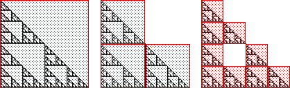

| Let G denote the right isosceles Sierpinski gasket, and S0, S1, S2, ... the sets constructed in the example. |
| In the example, we showed the Si converge to some compact set. To show they converge to the gasket, compute the Hausdorff distances |
| h(S0, G), h(S1, G), h(S2, G) |
|  |
| Find the general expression for h(Sn, G), and deduce |
| limn→∞ h(Sn, G) = 0. |
Return to Convergence of determinisitc IFS.